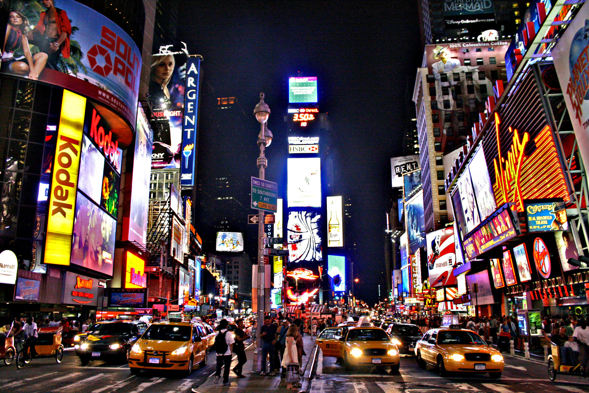
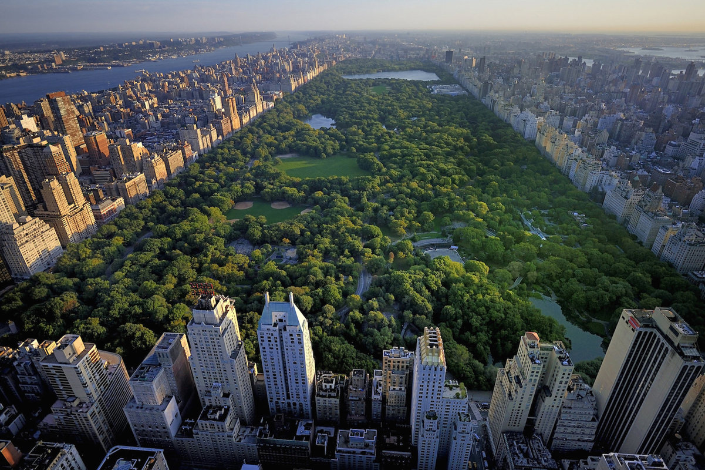
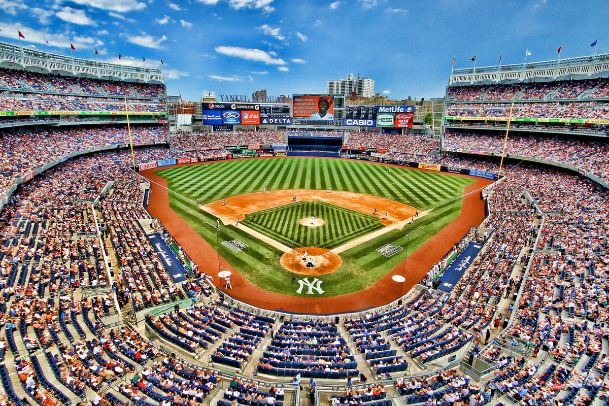

Orașul New York (în engleză: „The City of New York” sau „New York City”) este cel mai populat oraș din Statele Unite, zona sa metropolitană fiind una dintre cele mai mari zone urbane din lume. Este situat în statul New York, prescurtat NY și are statutul de cel mai mare oraș al Statelor Unite încă din 1790, fiind de asemenea și primul oraș capitală al statului și locul de numire a lui George Washington ca primul președinte al Statelor Unite. De mai bine de un secol a fost unul din centrele mondiale importante de comerț și finanțe. New York este de asemenea considerat unul din cele mai importante orașe din lume datorită influenței sale globale din mass-media, educație, divertisment, artă și modă. Orașul este de asemenea și un centru important al afacerilor externe,găzduind sediul Organizației Națiunilor Unite.
New York este împărțit în cinci zone: The Bronx, Brooklyn, Manhattan, Queens și insula Staten Island. Cu peste 8.5 milioane de rezidenți pe o arie de 830 km², New York este metropola cu cea mai mare densitate de locuitori din Statele Unite.
Multe dintre cartierele și monumentele orașului au o popularitate foarte mare în întreaga lume. Statuia Libertății primea milioanele de emigranți ce veneau în America la sfârșitul secolului al XIX-lea și începutul celui de-al XX-lea. Strada Wall Street din Manhattan este un centru financiar important încă din timpul celui de-al Doilea Război Mondial, si este sediul bursei americane New York Stock Exchange (NYSE). Orașul găzduiește de asemenea unele dintre cele mai înalte clădiri din lume, incluzând Empire State Building. Turnurile gemene World Trade Center din Manhattan au fost distruse în atentatele din 11 septembrie 2001.
Inainte de a intra in detalii, admirati frumusetea New York-ului.
Alegeți regiunea preferată
"New York este modelul perfect de oraş, nu modelul unui oraş perfect. "
© YorkField inc.